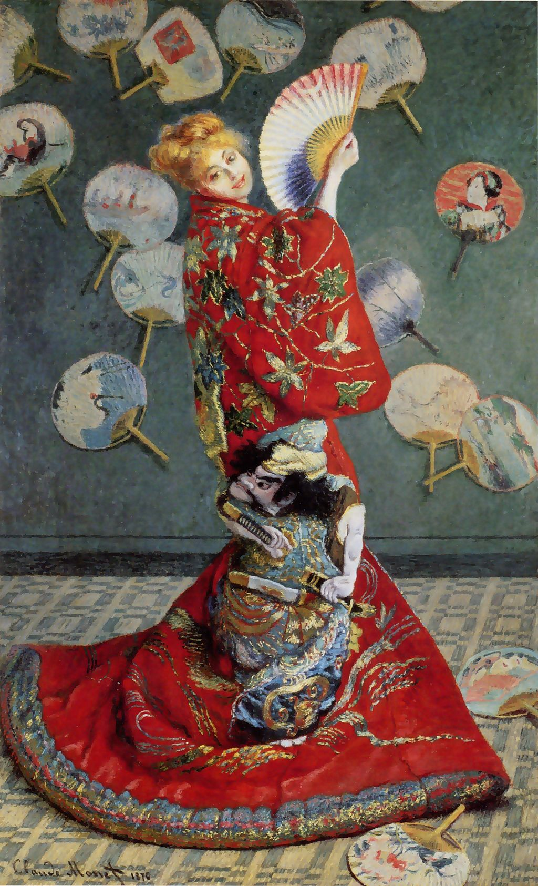

<head>
<meta charset="UTF-8" />
<meta name="keywords" content="drawing, painting" />
<meta name="description" content="drawings by Sunjy" />
<title>Sunjy</title>
<link rel="shortcut icon" type="image/x-icon" href="../../mImages/mCommon/favicon.ico" media="screen" />
<link rel="stylesheet" type="text/css" href="../../mCsses/mCommon/mCssA.css" />
<link rel="stylesheet" type="text/css" href="../../mCsses/mCommon/mCssB.css" />
<link rel="stylesheet" type="text/css" href="../../mCsses/mCommon/mCssC.css" />
<link rel="stylesheet" type="text/css" href="../../mCsses/mCommon/mCssD.css" />
<link rel="stylesheet" type="text/css" href="../../mCsses/mContent/mCssA.css" />
<link rel="stylesheet" type="text/css" href="../../mCsses/mContent/mCssB.css" />
<link rel="stylesheet" type="text/css" href="../../mCsses/mContent/mCssC.css" />
<link rel="stylesheet" type="text/css" href="../../mCsses/mContent/mCssD.css" />
</head>
<script type="text/javascript" src="../../mScripts/mContent/mContentAA.js" /></script>
<script type="text/javascript" src="../../mScripts/mContent/mContentAB.js" /></script>
<script type="text/javascript" src="../../mScripts/mContent/mContentAC.js" /></script>
<script type="text/javascript" src="../../mScripts/mContent/mContentAD.js" /></script>
<script type="text/javascript"></script> 
<script type="text/javascript">
document.write('<div class="mImgAbsolute"></div>');
/*
document.write('<p class="mFontSizeBColor" />From a white paper...</p>');
document.write('<table class="center"><tr><td>');
document.write('');
document.write('</td></tr></table>');
*/
</script>


<script type="text/javascript">
document.write('<p class="mFontSizeBColor" />Madame Monet wearing a Kimono</p>');
document.write('<p class="mFontSizeSColor" />“Madame Monet wearing a Kimono” by Claude Monet depicts Camille, the artist’s wife, in a splendid kimono standing in front of a wall covered in Japanese fans.<br><br>Paintings of European women in Japanese costume were popular in France in the second half of the 1800s. Monet’s wife, Camille, is wearing a blond wig in this painting to emphasize her Western identity.<br><br>Monet exhibited this work at the second group show of the Impressionist painters in 1876, where it attracted much attention.<br><br>This full-length portrait of Camille wearing a blonde wig and staring out at the viewer with an expression that period-critics saw as sexually suggestive.<br><br>This painting was motivated by commercial and publicity reasons at a time when Monet needed money. However, it was also a witty comment on the then Paris fad for all things Japanese.<br><br>“La Japonaise,” which is literally “Japanese woman,” was not Monet’s original title for this painting. He exhibited it as “Japonerie,” a recently introduced word describing Western works that imitated Japanese objects.<br><br>Monet included an elaborately embroidered kimono, sixteen paper fans, and a tatami mat as Japanese objects. The fan in Camille’s hand, however, was decorated in red, white, and blue, the colors of the French flag.<br><br>Emile Zola, the French novelist, described it as:<br><br>“prodigious in color and in strangeness.”<br><br>The lower left inscription reads “Claude Monet 1876.”<br><br>Japonisme<br><br>Japonisme is a French term that refers to the popularity and influence of Japanese art and design in Europe following the reopening of trade of Japan in 1858.<br><br>Japanese Ukiyo-e prints were one of the main Japanese influences on Western art.<br><br>From the 1860s, ukiyo-e, Japanese woodblock prints, became a source of inspiration for many Western artists.<br><br>Western artists were intrigued by the original use of color and composition. Ukiyo-e prints featured dramatic foreshortening and asymmetrical compositions.<br><br>An emphasis on diagonals, asymmetry, and negative space can be seen in the Western artists who were influenced by this style.<br><br>Camille Doncieux<br><br>Camille Doncieux (1847 – 1879) was the first wife of French painter Claude Monet. She was the subject of a number of paintings by Monet, as well as Pierre-Auguste Renoir and Édouard Manet. She was the mother of two sons with Monet.<br><br>While in her teens, Doncieux began work as a model. She met Monet, seven years her senior, in 1865 and became his model posing for numerous paintings.<br><br>She became Monet’s mistress, living in poverty at the beginning of his career. Camille and Monet were married in 1870 with painter Gustave Courbet as a witness.<br><br>Camille Monet died in 1879 in Vétheuil, where Monet painted her on her deathbed.<br></p>');
document.write('<table class="center" /><tr><td>');
document.write('<br>Paintings of European women in Japanese costume were popular in France in the second half of the 1800s. Monet’s wife, Camille, is wearing a blond wig in this painting to emphasize her Western identity.<br><br>Monet exhibited this work at the second group show of the Impressionist painters in 1876, where it attracted much attention.<br><br>This full-length portrait of Camille wearing a blonde wig and staring out at the viewer with an expression that period-critics saw as sexually suggestive.<br><br>This painting was motivated by commercial and publicity reasons at a time when Monet needed money. However, it was also a witty comment on the then Paris fad for all things Japanese.<br><br>“La Japonaise,” which is literally “Japanese woman,” was not Monet’s original title for this painting. He exhibited it as “Japonerie,” a recently introduced word describing Western works that imitated Japanese objects.<br><br>Monet included an elaborately embroidered kimono, sixteen paper fans, and a tatami mat as Japanese objects. The fan in Camille’s hand, however, was decorated in red, white, and blue, the colors of the French flag.<br><br>Emile Zola, the French novelist, described it as:<br><br>“prodigious in color and in strangeness.”<br><br>The lower left inscription reads “Claude Monet 1876.”<br><br>Japonisme<br><br>Japonisme is a French term that refers to the popularity and influence of Japanese art and design in Europe following the reopening of trade of Japan in 1858.<br><br>Japanese Ukiyo-e prints were one of the main Japanese influences on Western art.<br><br>From the 1860s, ukiyo-e, Japanese woodblock prints, became a source of inspiration for many Western artists.<br><br>Western artists were intrigued by the original use of color and composition. Ukiyo-e prints featured dramatic foreshortening and asymmetrical compositions.<br><br>An emphasis on diagonals, asymmetry, and negative space can be seen in the Western artists who were influenced by this style.<br><br>Camille Doncieux<br><br>Camille Doncieux (1847 – 1879) was the first wife of French painter Claude Monet. She was the subject of a number of paintings by Monet, as well as Pierre-Auguste Renoir and Édouard Manet. She was the mother of two sons with Monet.<br><br>While in her teens, Doncieux began work as a model. She met Monet, seven years her senior, in 1865 and became his model posing for numerous paintings.<br><br>She became Monet’s mistress, living in poverty at the beginning of his career. Camille and Monet were married in 1870 with painter Gustave Courbet as a witness.<br><br>Camille Monet died in 1879 in Vétheuil, where Monet painted her on her deathbed.<br>" />');
document.write('</td></tr></table>');
</script>


